Digitalfire Insight-Live
A cloud-hosted ceramics-targeted LIMS (lab info management system). It does glaze chemistry and physical testing the “Digitalfire way”. For technicians, educators, potters and hobbyists.
Key phrases linking here: digitalfire insight-live, record keeping, record-keeping, insight-live, keep records, lims - Learn more
Details
Digitalfire Insight-Live.com is a cloud-hosted LIMS (laboratory information management system, or lab notebook) started in 2012. It is targeted at ceramics. Users log in using a web browser and employ personal or group accounts to manage, search and study their recipes, materials, firing schedules, projects, testing records and related pictures. Accounts are private and used by potters, educators, ceramic engineers and technicians.
Insight-live is a product of Digitalfire Corporation, acting as an MSP (managed service provider). It has been in operation since 2012.
Insight-live is the successor to the Desktop Insight (for Windows, Linux, Mac) and moves functionality beyond chemistry calculation into physics and physical testing (and the management of associated data). It presents information in tall panels that open rightward across the screen (this enables side-by-side viewing and comparing of recipes, materials, firing schedules, pictures, etc).
Features:
- Manage Recipes
Insight-live enables the storage of unlimited recipes and offers many features to organize, interlink, document and search them. The system is tailored to the continuous accumulation of detail on individual and groups of recipes. - Manage Materials
The system knows thousands of materials. Add your own to override selected properties or the chemistry of the master ones. - Manage Photos
Insight-live treats photos as individual entities for which title, descriptions and notes can be accumulated. Individual photos can link to multiple recipes, materials, projects, etc. - Manage Firing Schedules
Document firing schedules (with titles, notes, steps, type, etc) and connect them to recipes. - Do Chemistry
The chemistry and properties (e.g. COE, LOI, Si:Al ratio, cost) of recipes is calculated and displayed automatically (according to the calculation type selected). Learn to see your glazes as formulas of oxides (not just as recipes of materials) and the materials as sources of these oxides. Progressively learn the relationships between oxides in the formula and the fired properties of glass. - Projects
Projects tie groups of recipes, materials, photos, firing schedules together. - Units-of-measure
Units of measure make it possible to create production mix tickets (each recipe material can specify a unit of measure). - Manage Testing Records
Track specimens and their physical testing data for lab QC and product development - learn the relationships between your clay body recipe and the fired properties it produces (e.g. fired shrinkage, fired density and strength, color, thermal expansion). - Learn
Insight-live integrates with digitalfire.com, the largest online knowledge base for technical information about traditional ceramics manufacture.
In summary, an insight-live.com account is about ongoing, organized testing and record keeping, adjustment and development of glazes and bodies (and the learning that goes with that). It is about keeping an audit trail. Many people start with an insight-live account just to support our work, but over time they accumulate motivation to use it when they reach a critical point of need and awareness of the value.
Related Information
Click here for case-studies of Insight-Live fixing problems
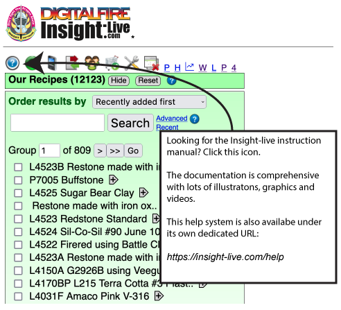
This picture has its own page with more detail, click here to see it.
You will see examples of replacing unavailable materials (especially frits), fixing various issues (e.g. running, crazing, settling), making them melt more, adjusting matteness, etc. Insight-Live has an extensive help system (the round blue icon on the left) that also deals with fixing real-world problems and understanding glazes and clay bodies.
An example of a production log book that a ceramic industry worker keeps
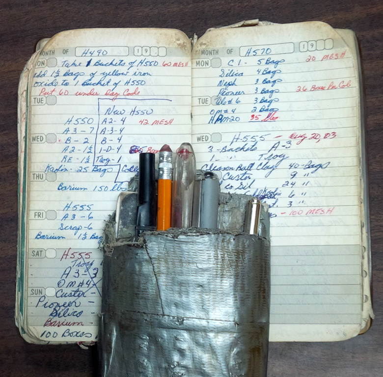
This picture has its own page with more detail, click here to see it.
Unfortunately, it is in his pocket, not available to lab personnel. This could (should) be replaced by a group account at Insight-live.com.
Here's how we used to record test results before insight-live.com
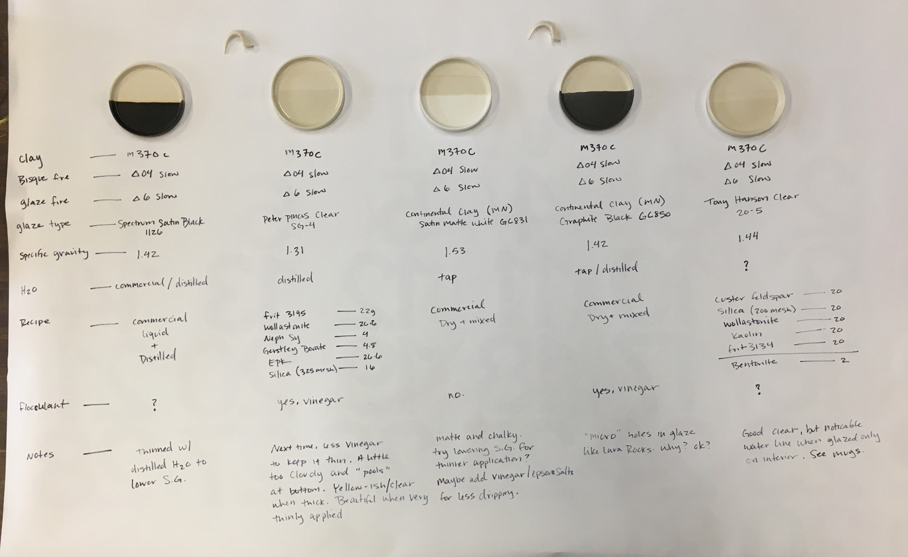
This picture has its own page with more detail, click here to see it.
Side-by-side presentation. That’s the best. But I magine if you could put, side by side; the recipes, pictures, notes, data, of any recipe test you had ever done. Even results of testing you did on commercial prepared glazes and glaze combinations. And be able to link, search, print, share them. That’s what you do in Insight-live. Pottery has always been about the data, we just let that information die before! Now we can learn so much more from it. Photo courtesy of Brielle Rovito, Burlington, Vermont, USA.
Are your glaze recipes lost in binders or buried on your phone?
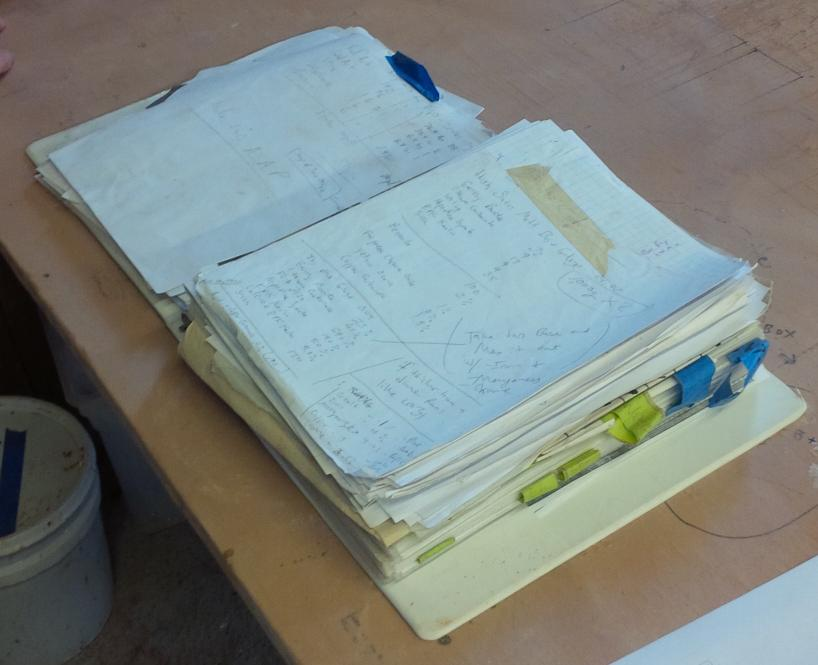
This picture has its own page with more detail, click here to see it.
Consider how valuable your glaze and body development records are. Are they in a three-ring binder? Or do you have pictures and notes scattered across apps on your phone? If you're testing, adjusting, or developing glazes, bodies, underglazes or engobes, traditional notebooks and binders are holding you back. They don't have keywords, and they are only grouped, not categorized. With Insight-live, you can link recipes to each other and to important details like photos, materials, firing schedules and URLs. Organize test recipes into projects, classify them with typecodes (tokens), calculate chemistry, and create mix tickets. Research materials and perform keyword searches. Put anything side-by-side to study and determine the next move. Physical notebooks can’t do this—but your account at Insight-live.com can!
Reason 1 for record keeping in an insight-live.com account
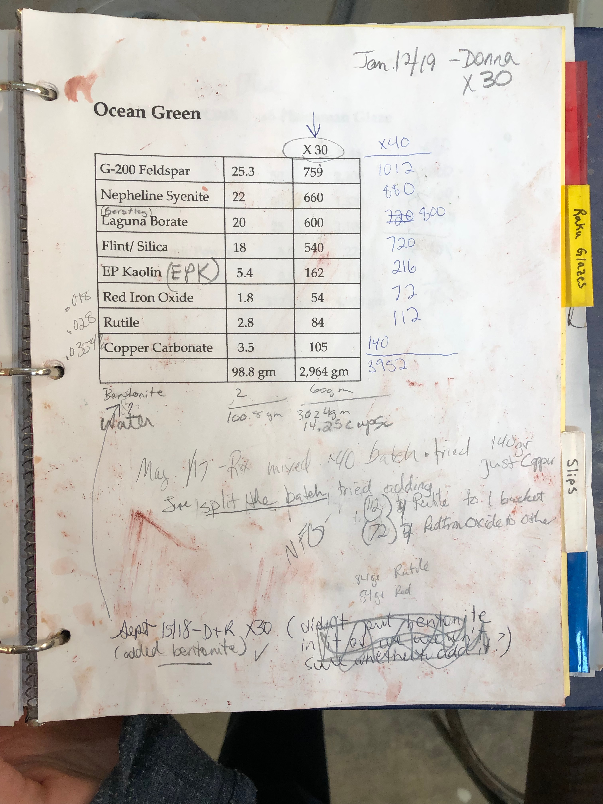
This picture has its own page with more detail, click here to see it.
Notes. It is a much better place to take notes than that old binder you use. And the chance of losing them is the same as the chance of losing the phone that you access them with. No, wait, it is way less. Because any internet connected phone or device with a browser can be used.
Code numbers are the key to organizing your studio or lab
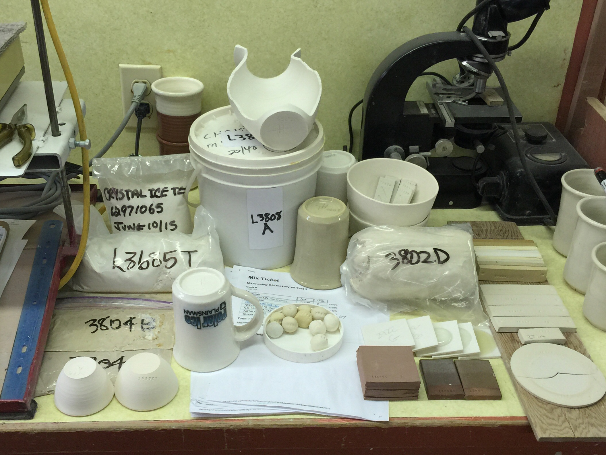
This picture has its own page with more detail, click here to see it.
The new ceramics is about data! Everything here has a code number (in the form x1234) that members of our team can search in our group account at Insight-live.com. We write the numbers on the bottoms of pots, plastic bags of powders/liquids/pugged, buckets, glaze balls, mix tickets, test bars, tiles, glaze samples, drying tests, flow tests, sieve analyses, LOI/water content tests, etc. Glazed fired pieces can have up to three numbers, the body, engobe and glaze. If something is lacking a number it goes in the garbage because it teaches nothing and is therefore taking up pointless space.
Testing your own native clays is easier than you think

This picture has its own page with more detail, click here to see it.
Some simple equipment is all you need. You can do practical tests to characterize a local clay in your own studio or workshop (e.g. our SHAB test, DFAC test, SIEV test, LDW test). You need a gram scale (preferably accurate to 0.01g) and a set of callipers (check Amazon.com). Some metal sieves (search "Tyler Sieves" on Ebay). A stamp to mark samples with code and specimen numbers. A plaster table or slab. A propeller mixer. And, of course, a test kiln. And you need a place to put all the measurement data collected and learn from it (e.g. an account at insight-live.com).
Messy binders don't have a "search button"
And they hold a limited number of pages
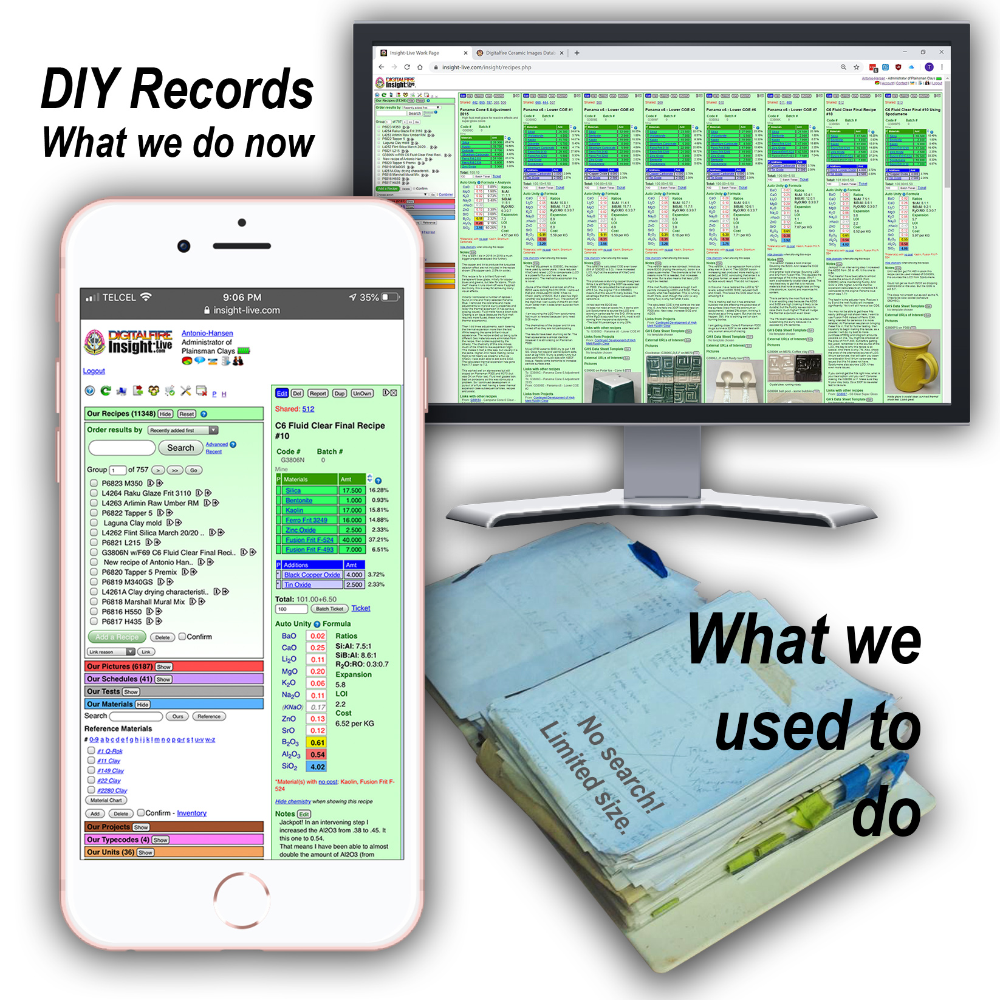
This picture has its own page with more detail, click here to see it.
Are your records in a messy binder? Binders don't have "Search" buttons. Side-by-sides. And many DIYers would generate a binder full in a year. But how does one even start to organize?
Start by moving your recipes to an account at insight-live.com, assigning each a code number. Then, in your studio/lab, label every fired sample, bucket, jar, glaze test, bag with the corresponding code number. Upload pictures for each recipe. Enter your firing schedules. Research the solutions to issues you are facing with glazes at the Digitalfire Reference Library (ask us questions using the contact form on each of the thousands of pages there). Then start planning improvements and tests. Choose a recipe you need to improve/evolve, duplicate it, increment the code number, make changes, enter explanatory notes. With this preparation you will hit the ground running back at work.
Firing schedules at insight-live.com
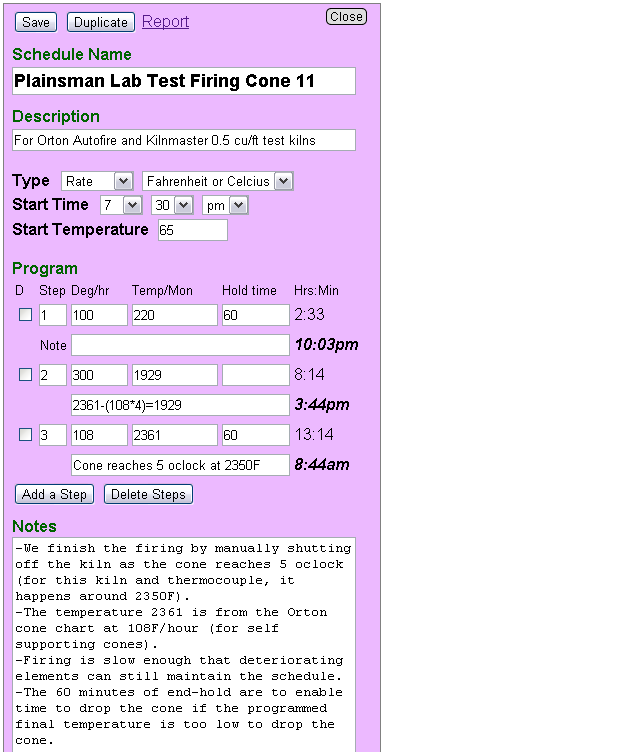
This picture has its own page with more detail, click here to see it.
A cone 11 oxidation firing schedule (I maintain in an account at insight-live.com). Using these schedules, I can predict the end of a firing within 5-10 minutes at all temperatures. I can also link schedules to recipes and report a schedule so it can be taken to the kiln and used as a guide to enter the program.
The New 2020 Digitalfire Reference Library is Here
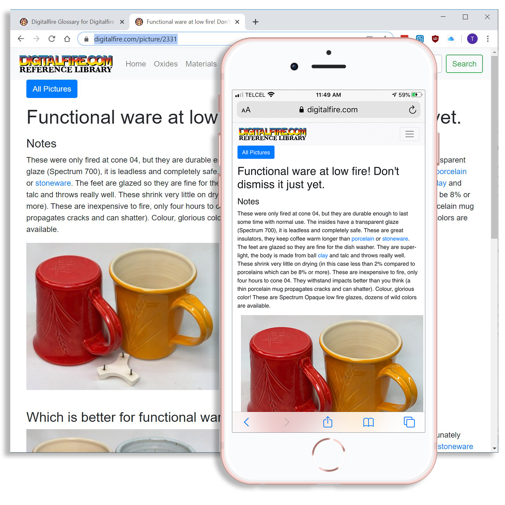
This picture has its own page with more detail, click here to see it.
It has morphed into a webapp, reflexive and menu-driven (based on Twitter Bootstrap). It now employs permanent URLs. And pages have logical, and hierarchical URLs (e.g. digitalfire.com/oxide/cao, digitalfire.com/material/feldspar). It correctly forwards 5000+ old URLs. Terms from the glossary automatically hotlink throughout (as do code-numbers for recipes, tests and firing schedules). The search field in the menu bar is area-specific (or all-area at digitalfire.com/home). Still no ads and no tracking. The UI displays from server #1, it calls the database API on #2, the email system on #3, media from #4 and insight-live.com from server #5! So it is super fast, flexible and expandable. There are new areas (e.g. projects, pictures, typecodes). Media displays better. Every page still has a contact form, so you can ask any question anywhere. What till you see what's coming!
Comparing two glazes having different mechanisms for their matteness

This picture has its own page with more detail, click here to see it.
These are two cone 6 matte glazes (shown side by side in an account at Insight-live). G1214Z is high calcium and a high silica:alumina ratio. It crystallizes during cooling to make the matte effect and the degree of matteness is adjustable by trimming the silica content (but notice how much it runs). The G2928C has high MgO and it produces the classic silky matte by micro-wrinkling the surface, its matteness is adjustable by trimming the calcined kaolin. CaO is a standard oxide that is in almost all glazes, 0.4 is not high for it. But you would never normally see more than 0.3 of MgO in a cone 6 glaze (if you do it will likely be unstable). The G2928C also has 5% tin, if that was not there it would be darker than the other one because Ravenscrag Slip has a little iron. This was made by recalculating the Moore's Matte recipe to use as much Ravenscrag Slip as possible yet keep the overall chemistry the same. This glaze actually has texture like a dolomite matte at cone 10R, it is great. And it has wonderful application properties. And it does not craze, on Plainsman M370 (it even survived a 300F-to-ice water IWCT test). This looks like it could be a great liner glaze.
Fight the dragon on-line or off-line
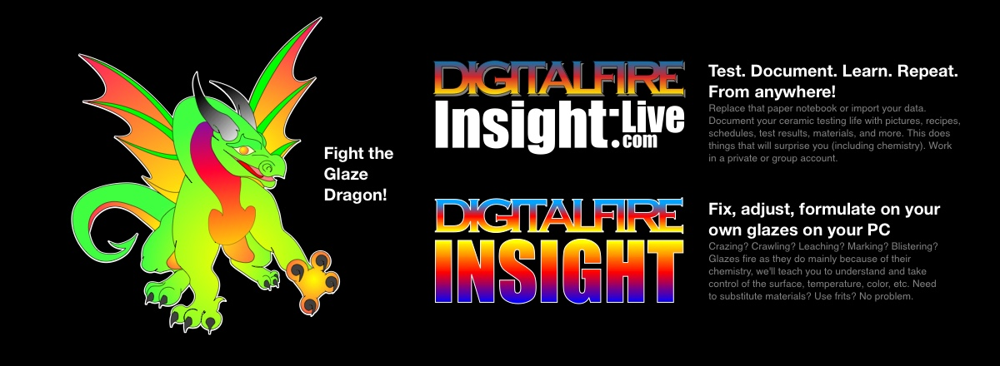
This picture has its own page with more detail, click here to see it.
Fight the glaze dragon! Test. Document. Learn. Repeat. Replace that paper notebook or binder with an account at Insight-live.com. Fix, adjust, formulate your own glaze on your PC using desktop Insight software.
Fight the dragon with Insight-live
This picture has its own page with more detail, click here to see it.
Fight the glaze dragon. Disorganized documentation of your testing? You are playing into his hands. Replace that notebook or binder with pictures, recipes, firing schedules, test results, material and more in your own or a group account at insight-live.com.
Inbound Photo Links
|
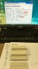 About to enter boiled weight of a test bar into my insight-live account. |
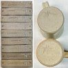 Fine tuning maturity of a buff stoneware: It is about the data |
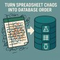 Are you testing production clay bodies? Glazes? Turn "spreadsheet chaos" into "database order" |
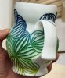 Potter goes full DIY and makes her own porcelain The best thing happens: Failure on the third mix! |
Links
| URLs |
https://insight-live.com/index.php
Insight-Live.com cloud-based ceramic lab notebook and education platform Ceramic-industry-specific LIMS Lab information management and education system from Digitalfire. This is the software and information to study, understand, adjust and formulate glazes and clay bodies. Replace excel and word documents with a searchable cloud-hosted database accessible from any web browser. View anything side-by-side. Track unlimited specimens and manage large numbers of simultaneous projects. No need to request a quote, just sign up. |
| URLs |
https://digitalfire.com/university/insight-live/overview/Insight-Live%20Overview.html
Insight-Live.com Overview Video |
| URLs |
https://insight-live.com/insight/share.php?z=CEavKR6Gye
Insight-live share showing how to fix crazing with cone 6 Leach's Clear |
| URLs |
https://insight-live.com/insight/help
Digitalfire Insight Help WebApp |
| URLs |
https://insight-live.com/insight/help/It+Starts+With+a+Lump+of+Clay-433.html
Case Study: Testing a Native Clay Using Insight-Live.com |
| Articles |
Changing Our View of Glazes
A big secret to getting control of glazes is to begin looking at them as formulas of oxides rather than recipes of materials. |
| Glossary |
Digitalfire Foresight
Database software for DOS made by Digitalfire from 1988 until 2005 and was used to by ceramic technicians to catalog recipes, materials, test results and pictures. |
| Glossary |
Digitalfire Insight
A downloadable program for Windows, Mac, Linux for doing classic ceramic glaze chemistry. It has been used around the world since the early 1980s. |
| Glossary |
Tony Hansen
Tony Hansen is the author of Digitalfire Insight, Digitalfire Reference Library and Insight-Live.com, he is a long-time potter, ceramic lab-technician and body and glaze developer. |
| Glossary |
Glaze Mixing
In ceramics, glazes are developed and mixed as recipes of made-made and natural powdered materials. Many potters mix their own, you can to. There are many advantages. |
| Glossary |
Code Numbering
In a ceramics lab, studio or classroom specimens of hundreds of glazes and bodies may be present. A code numbering system that links these to written or computer records is essential. |
| Glossary |
Digitalfire Reference Library
A public ad-free, no-tracking, technical reference website for potters, educators, technicians and hobbyists in pottery and ceramic production. Since 2000. It is an SEO and AEO success story. |
| Media |
Preparing Pictures for Insight-live
How to take a picture using an iPhone, crop and resample it, save it, then upload it to a recipe. |
| Video 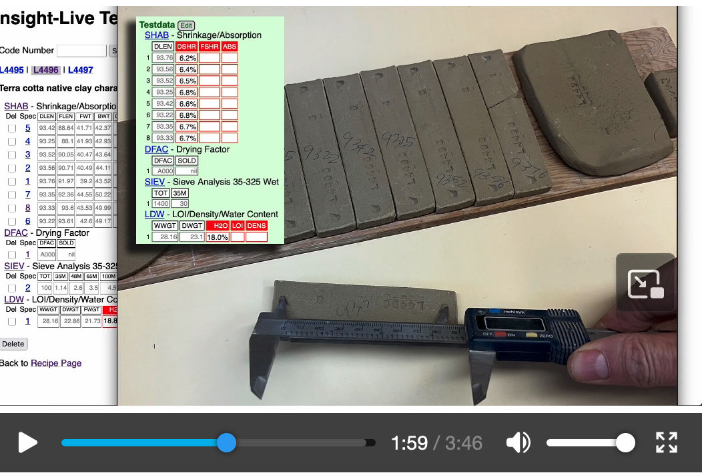 |
Entering TestData Into Insight-Live
How to enter physical testing results into your group account at insight-live.com. We will enter data from shrinkage/absorption bars, the drying factor disk and an LOI/water content tester. |
| Media |
Enter a Recipe Into Insight-live
Learn how to add a recipe, title it, add lines and change them, set lines to added status, deal with unrecognized materials, enter notes and pictures and print a mix ticket |
| Media |
How to Paste a Recipe Into Insight-live
If your recipe is on the clipboard, this shows you how to import it into Insight-live and make adjustments after. |
 PayPal | No tracking, No ads, No paywall, No transient content! Just organized, concise information constantly updated and improved. Was this helpful? Consider supporting me. |
| By Tony Hansen Follow me on        |  |
Got a Question?
Buy me a coffee and we can talk 

https://digitalfire.com, All Rights Reserved
Privacy Policy